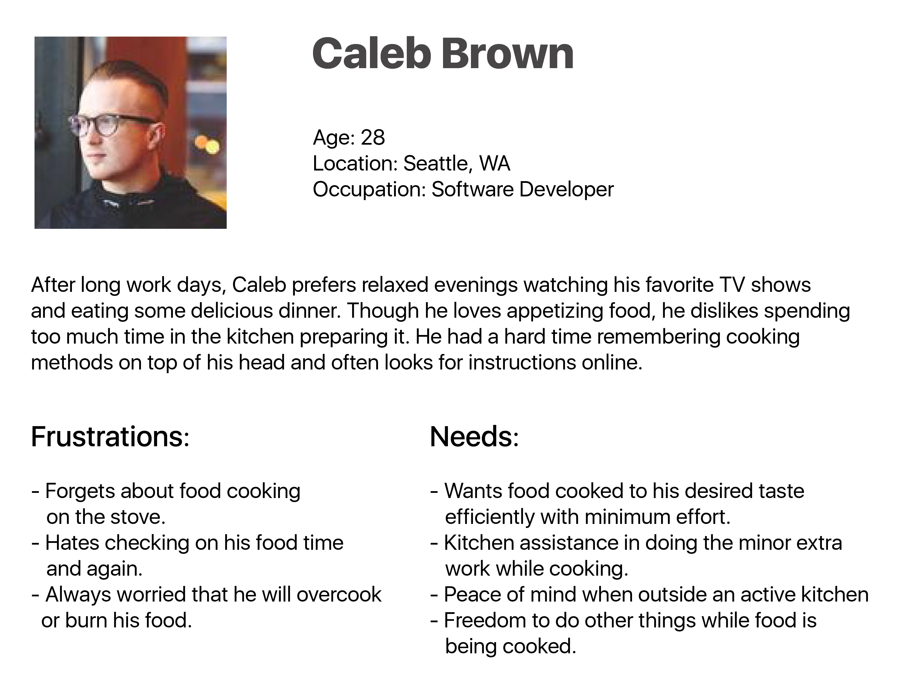

Cluck | iOS Application for smart device
Project
iOS Application, 3-Week Sprint.
Client
OrbSense Technologies, Seattle.
Team
Ameeta Dalvi, Blair Warner, Christopher Lewis.
Tools
Sketch, Invision, POP, Omnigraffle, Illustrator, Whiteboarding, Sketching.
Product Overview:
Cluck is a smart kitchen device with an in-built temperature sensor that assists people to keep track of their cooking activity while multi-tasking. When immersed with boiling food, the sensor measures the temperature variations, adjusts the target time and appropriately alerts its user when the food is done through a smart phone app.
The Challenge:
OrbSense Technologies, an emerging Seattle based Startup created Cluck, a smart sensor built kitchen device. Their inspiration behind Cluck was based on the Internet of Things (IoT) i.e. converting the unseen data into useful information for the users and thus giving them better control of their environment and a delightful experience.They approached us for two primary objectives:
- Validating the market need for their product, Cluck.
- Developing features for their mobile application based on the User Research and Testing data.
Our Solution:
My team and I conducted comprehensive research and user testing to develop a fun and engaging interface that eliminates guesswork when boiling foods. It provides users with clear and correct information at relevant intervals about their food and gives them the ability to confidently step away from an active kitchen.
My Role:
I collaborated with my team over User Research, Planning and Usability Testing. My individual responsibilities were:
- Acted as a Project Lead on the team and managed the schedule for the project to ensure we met the set goals and delivered on time.
- Built a project plan (Statement of Work) to discuss the scope of the project with the clients.
- Created the pasta selection design flows, sketches, wireframes and further developed three iterations of rapid prototypes for usability testing using Sketch, Invision and POP.
- Developed Proto-Persona, Task Analysis and User Flows.
Our Process
Research:
From our first meeting with the stakeholders we learnt about their product and business goals. Cluck currently worked well for eggs and they were looking at introducing more food types depending on user demand. I prepared statement of work to define our project scope to the stakeholders and a schedule for our team to stay on track and deliver on time.
We started the research with focus on our first objective: Does Cluck truly fulfill a real user need?
We looked at competing products in the market and sent out a screener to recruit participants for our user interviews. A total of 25 responses were received out of which we conducted 17 user interviews. The focus of the interview questions was:
- Users’ current cooking process (for boiling eggs, pasta, potatoes)
- Problems they face in the kitchen
- Importance of multitasking while cooking
- Their reaction to Cluck and how likely are they to buy it
We also implemented participatory design method at the end of the interviews by requesting the participants to walk us through their process of boiling food using props and sketch the kind of information they would like to see in the app. This helped us identify the pain points and needs in the process and how they would perceive the app interface.

Planning:
We documented our interview data and sorted it in logical groups using affinity diagrams. It helped us identify, group and discuss common behavior patterns and issues.
Our main conclusion from the User Research data was that Cluck functioning only for eggs wasn’t compelling enough for users to purchase it. They wanted it to work with more food types and give accurate results.
We presented our key findings to the stakeholders to assess our path forward. Our next plan of action was:
- Design the information architecture for pasta selection in the Cluck app.
- Design a feedback mechanism for Cluck app.
- Usability Testing of cluck product and its current app for design development.
Storyboard

Proto-Persona
I developed a data-driven proto-persona using the key behavioral patterns from the affinity diagram and my teammate worked on the user-story.


Design
Design studio and sketches
One of the key elements in our design process was the design studio which involved rapid sketching of our design concepts and discussing it with the team. This generated great ideas, helped to communicate our vision with teammates and built unanimity for developing wireframes.
The design studio:
- Generated great ideas.
- Helped to communicate our vision with teammates
- Built unanimity for developing wireframes.
After brainstorming on the whiteboard we divided the screens amongst ourselves. From then on I was responsible for developing the pasta selection design flow and wireframes while my other teammates worked on scanning barcodes for pasta selection and feedback mechanism for the users.
Design Features
Pasta Selection feature: I dug deeper to find out more about different types of pasta and their cooking times. First I tried to group them according to their cooking times but that proved to be a challenging pasta selecting process. We then conducted a card sorting exercise to understand users’ mental model in classifying different pastas. 7 out of 11 participants grouped pastas according to their shapes.
However, the cook times of pastas in the same category could vary by half/double the time due to factors like thickness, ingredients etc. Designing an effective navigation for pasta type was one of my biggest challenges in this project. My solution was to list pastas in groups based on their shapes and use a search bar at top to quickly find a specific pasta.
Barcode: We also gave users the option to simply scanning barcodes on their pasta box to get the accurate cook times for the specific pasta. It also allows users to add and save information of their favorite pastas thus adding to the database.
Feedback Mechanism: We wanted to give users more control over their cooking process by allowing them to modify their cook times. They could alter the cook times of the food after the cooking process depending on the result. Cluck would use their feedback to adjust the cook time of that food for the next cooking.

Usability Testing
The purpose of usability testing was to understand the users’ pain points when using cluck in their kitchens and iterate the design to make the app intuitive, user friendly and fun.We conducted a total of 3 rounds of user testing.
Round 1 (total tests: 7): Testing with Cluck device and the current app in the participant’s kitchen. All participants stepped away from the kitchen to tend to other matters (kids, work, tv)
Round 2 (total tests: 10): Testing with an interactive paper prototype in POP which included design features for pasta selection and redesign based on feedback from round 1 tests.
Round 3 (total tests: 12): Testing interactive wireframes in Invision to find out what works in the app and what needs to be modified for our final prototype.
Design Iterations
I sketched the food selection, pasta type selection, cooking instructions, display and alerts screens for rapid paper prototype testing and further developed the wireframes using Sketch and Invision. The paper prototypes helped us gain new insights with user testing and quickly incorporate the changes in the next iteration.

Takeaways
Dove deep into User Research and Usability Testing:
I worked closely with users in the project at every stage and used their feedback to guide our design. All our design decisions were data driven.
Communicating with stakeholders:
Clear communication with our stakeholders kept us moving in the right direction. We communicated our findings with them time and again to ensure the user needs are aligned with the business strategies.